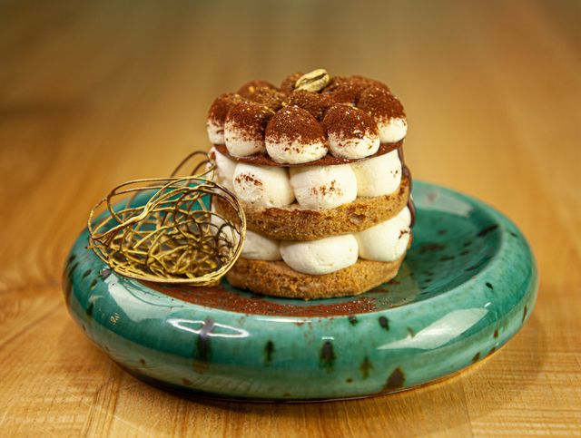

Home
Tiramisu Recipe

Description
Tiramisu is a classic Italian no-bake dessert made of coffee-soaked ladyfingers layered with a creamy mascarpone filling.
It needs a few hours in the fridge to set, so it is best made the day before serving.
Ingredients
- 250 g mascarpone
- 250 g mascarpone
- 80 g sugar
- 200 g ladyfingers
- 250 ml strong espresso, cooled
- Cocoa powder for dusting
Steps
- Whisk the egg yolks with the sugar until pale and creamy.
- Add the mascarpone and mix until smooth.
- Whip the egg whites until stiff and fold them gently into the cream.
- Quickly dip the ladyfingers in the coffee and arrange a layer in a dish.
- Spread half of the cream on top, then repeat with another layer of ladyfingers and cream.
- Chill in the fridge for at least 4 hours.
- Dust with cocoa powder before serving.